Agenda e 1a1s
Consulta horários livres com margem de segurança, agenda novo 1a1, remarca, exclui e registra encontros já realizados com membros do capítulo.

O Assistente BNI transforma o chat da IA que você já usa em um apoio completo ao ciclo do capítulo: agenda de 1a1s, pitch de 30 segundos, follow-up, referências, Power Team, kit da reunião e dashboard — sempre com os seus dados isolados em um único arquivo Markdown.
Não é um app nem um produto oficial do BNI. É uma skill (arquivo de lógica) que orienta a IA a trabalhar só com a sua ficha, a lista do capítulo e o histórico que você controla.
Focado no que o membro precisa entre uma reunião e outra: marcar e registrar 1a1s, preparar pitch, acompanhar referências e chegar à reunião com o kit pronto.
Tudo fica no arquivo base-de-dados.md. A skill não grava sozinha: quando algo precisa ser registrado, devolve o bloco pronto para você colar e manter o histórico.
Contabilidade, advocacia, marketing, obras, saúde ou qualquer especialidade. Serviços, diferencial, público e tom vêm sempre da sua ficha — sem especialidade fixa na skill.
Funciona com Grok, Claude, Cursor, ChatGPT, Gemini, Copilot, Perplexity e outras ferramentas que aceitam instruções em Markdown e arquivos de contexto.
Rotinas práticas do networking BNI, comandadas por texto simples (como bni, 1a1, pitch ou resumo) a partir da sua base.
Consulta horários livres com margem de segurança, agenda novo 1a1, remarca, exclui e registra encontros já realizados com membros do capítulo.
Gera três opções alinhadas à sua ficha, versão com fato verificável do dia e pitch da semana para apresentar na reunião do capítulo.
Registra referências dadas e recebidas, status e valor aproximado; acompanha 1a1s sem follow-up e prepara mensagens de acompanhamento.
Sugere parceiros de sinergia, monta o kit da reunião (pitch, 1a1s, follow-ups, referências) e oferece visão semanal das prioridades.
Textos prontos com links corretos para convite de 1a1, horários livres, follow-up e boas-vindas a visitante na reunião.
O conteúdo vem da sua ficha e da lista do capítulo. O Assistente BNI não assume uma especialidade fixa: serve a qualquer membro.
O Assistente BNI usa dois arquivos: a lógica (SKILL.md) e os seus dados (base-de-dados.md). Gere a base no formulário, baixe o SKILL, conecte na IA e digite bni.
base-de-dados.md no formulário e baixe o SKILL.md (botão acima).SKILL.md e usar apenas os dados da base.bni para abrir o menu do Assistente BNI.Quando o assistente devolver uma tabela ou bloco atualizado, cole de volta no base-de-dados.md para manter o histórico.
base-de-dados.md no formulário e baixe o SKILL.md.bni.Ao receber blocos atualizados, cole de volta no base-de-dados.md e reenvie o arquivo no Project se necessário.
base-de-dados.md no formulário e baixe o SKILL.md..cursor/skills/assistente-bni/).SKILL.md e base-de-dados.md no mesmo diretório.bni.base-de-dados.md no formulário e baixe o SKILL.md.SKILL.md no campo de instruções.base-de-dados.md em Knowledge.bni no chat desse GPT.Atualize o arquivo em Knowledge sempre que colar novos blocos na base.
base-de-dados.md no formulário e baixe o SKILL.md.bni para abrir o menu.Se o plano permitir Gems ou instruções salvas, grave o SKILL nas instruções e mantenha a base anexada ou atualizada no contexto.
base-de-dados.md no formulário e baixe o SKILL.md.bni para abrir o menu.No Copilot Pro / Microsoft 365, use o mesmo par de arquivos em um chat dedicado ao BNI para não misturar contextos.
base-de-dados.md no formulário e baixe o SKILL.md.bni para abrir o menu.Prefira o modo que prioriza arquivos anexados. Atualize a base colando de volta os blocos que o assistente devolver.
base-de-dados.md no formulário e baixe o SKILL.md.SKILL.md nas regras ou instruções do assistente.base-de-dados.md no contexto ou como anexo e defina que as respostas usam somente a base.bni.Instalação via terminal: curl -fsSL https://raw.githubusercontent.com/JEAN-ALMEIDA-CZO/assistente-bni/main/install.sh | bash
Gere a base do seu capítulo no formulário, baixe o SKILL.md e conecte os dois na IA. Em seguida digite bni.